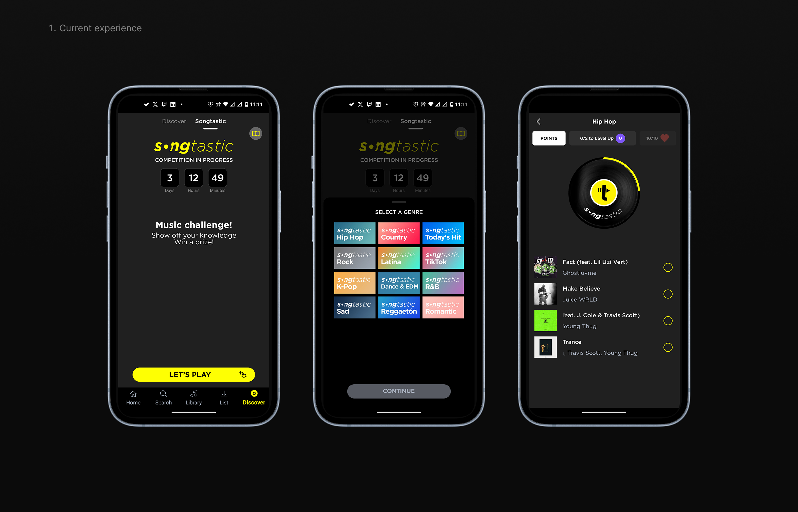
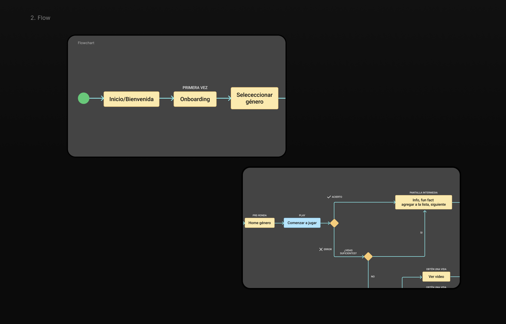
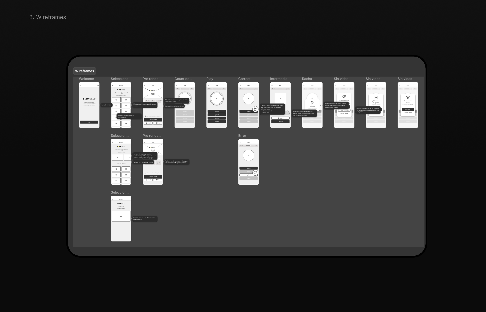
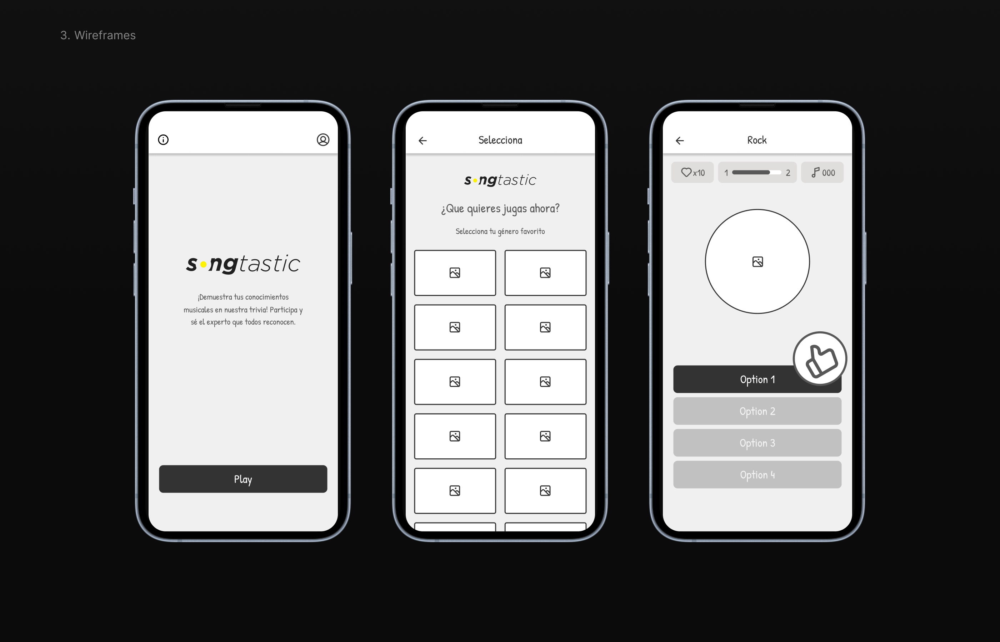
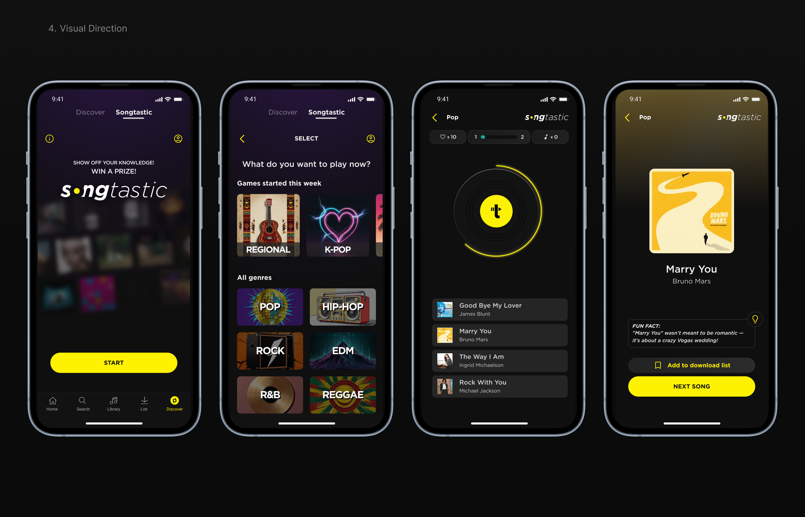
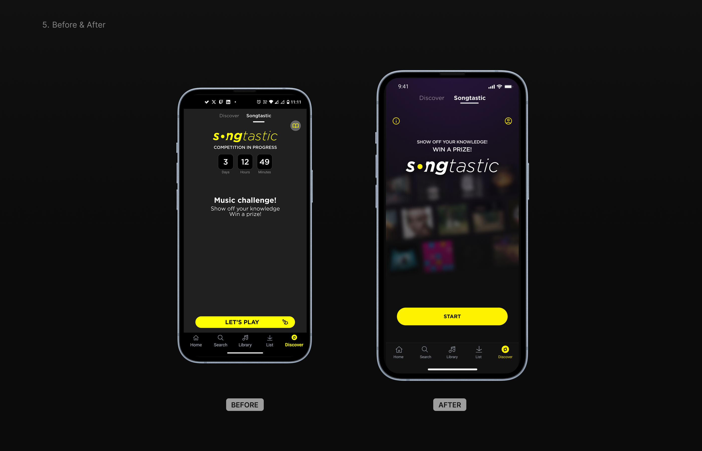
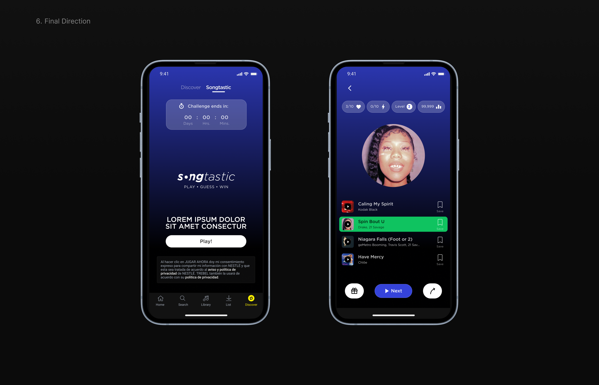
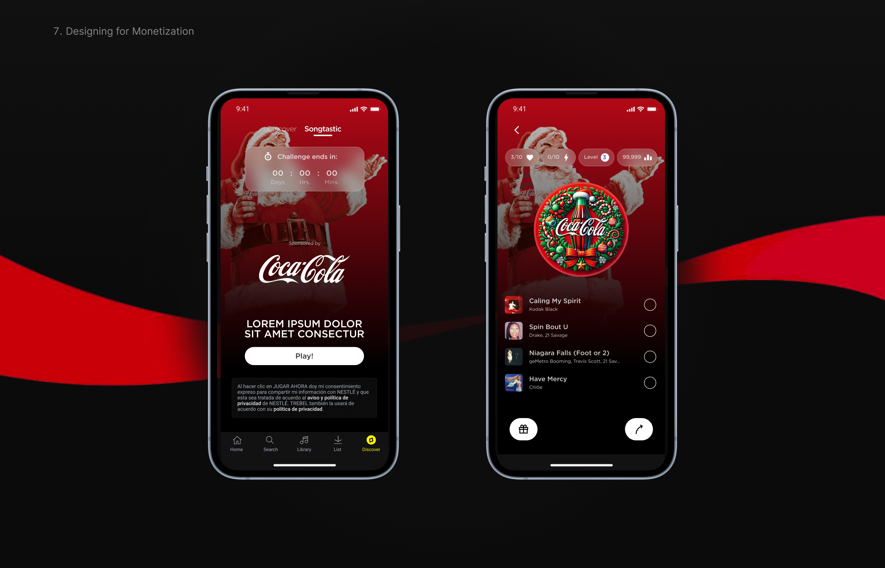

Songtastic
Redesigning a music guessing game to improve engagement and unlock monetization
"Songtastic" is a gamified feature within a music streaming app where users guess songs to win rewards.
Despite being an early and imperfect implementation, the feature showed strong user engagement and quickly became a valuable opportunity for brand-sponsored campaigns, including rewards like concert and festival tickets.
This project focused on redesigning the experience to make it more intuitive, engaging, and scalable.
The original experience worked — but had clear limitations:
As a result, the feature had potential, but was not fully optimized for engagement or monetization.

The feature lacked hierarchy, guidance, and emotional feedback — key elements for any successful game-like experience.
I led the redesign end-to-end:

I restructured the experience by introducing missing steps and improving clarity across the full journey:
Entry → Genre selection → Gameplay → Feedback → Results
This created a more guided and engaging experience.


Wireframes helped define the structure and validate new interaction points before moving into visual design.

I explored a more expressive and game-oriented visual direction:
The goal was to make the feature feel like an actual game, not just an extension of the app.

The redesign improves:

The final version evolved into a more restrained, brand-aligned visual style while preserving the core experience improvements.

A key part of the redesign was enabling brand-sponsored experiences. The system was designed to:
The redesign was validated internally and prepared for release, establishing a scalable foundation for:
Replace VIDEO_ID_HERE in the source code with your YouTube video ID.
Structure is critical for engagement in gamified experiences
Visual feedback drives user satisfaction
Monetization must feel integrated, not intrusive
Balancing creativity and business constraints is essential